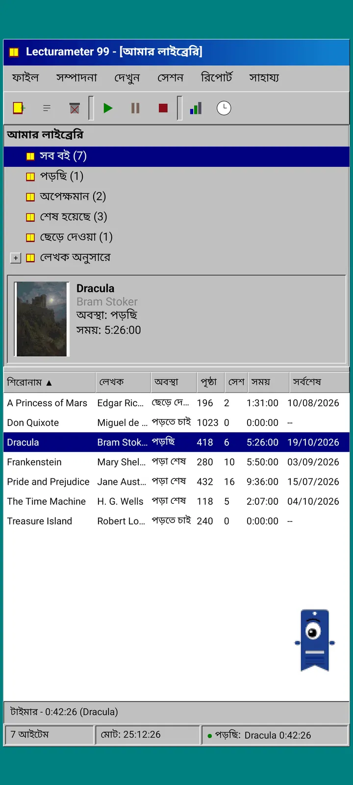
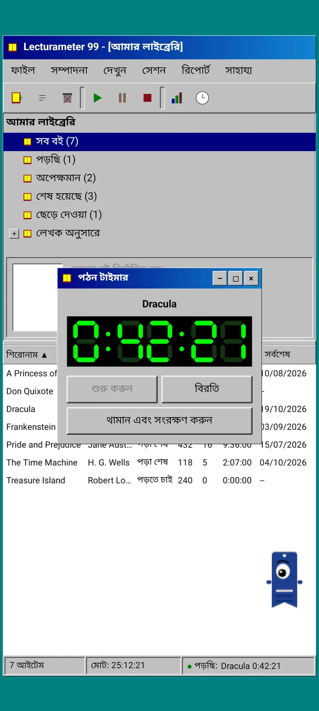
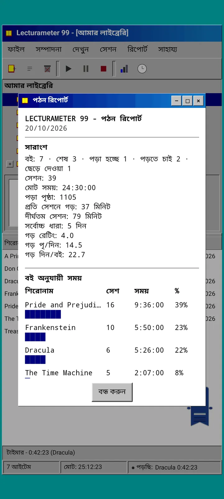
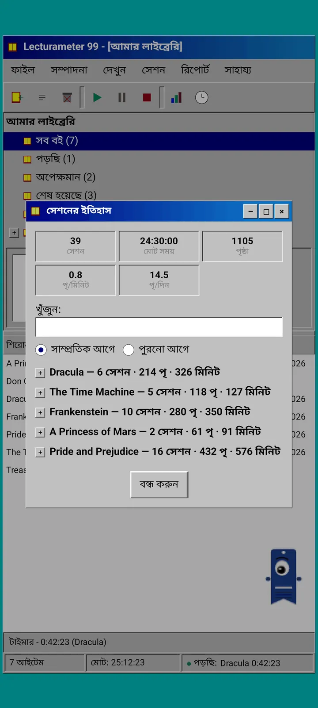
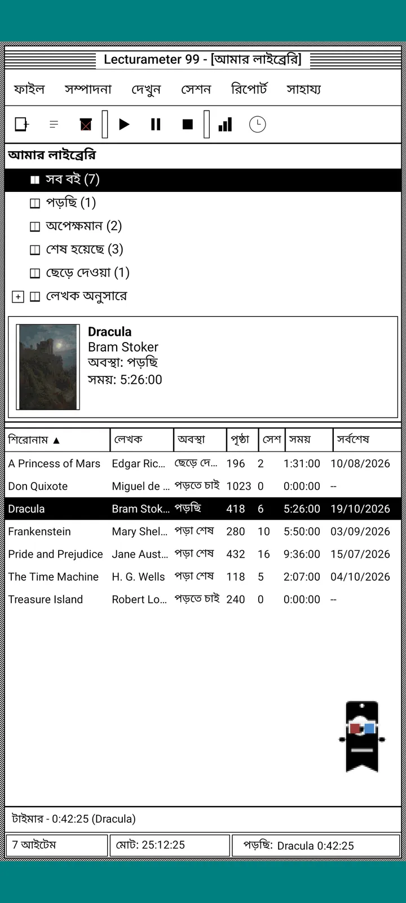
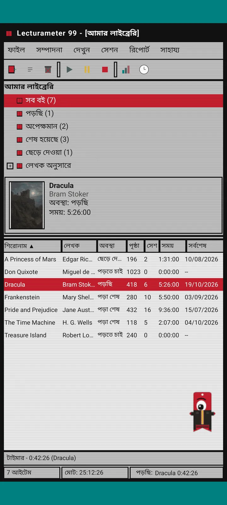
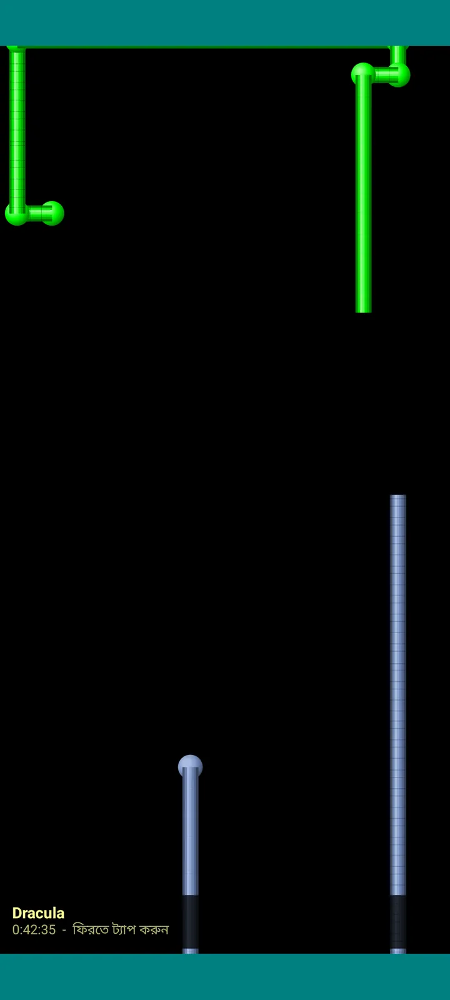

Lecturameter 1999
Lecturameter, যেন 1999 সালে CD-ROM থেকে ইনস্টল করেছেন। জানালা, মেনু আর টেবিলসহ অ্যাপটির একটি বিকল্প ক্লায়েন্ট, যা আপনার আসল ব্যাকআপ খোলে।

এটা কী
নব্বইয়ের দশকের শেষের একটি ডেস্কটপ প্রোগ্রাম, আপনার ফোনে চলছে। নীলচে-সবুজ ডেস্কটপের উপর একটি জানালা, মেনু বার, টুলবার, ফোল্ডার ট্রি, ঘন টেবিল আর স্ট্যাটাস বার।
- লাইব্রেরি ট্রি: সব বই, পড়ছি, অপেক্ষমান, শেষ হয়েছে, পরিত্যক্ত আর লেখক অনুযায়ী
- শিরোনাম, লেখক, অবস্থা, পৃষ্ঠা, সেশন, সময় আর শেষবার পড়ার তারিখসহ টেবিল। সাজাতে কলামের শিরোনামে ট্যাপ করুন
- আসল বই অনুসন্ধান, Lecturameter যে ক্যাটালগ ব্যবহার করে সেটা দিয়েই
- Lecturameter ব্যাকআপ আর Goodreads CSV ইমপোর্ট ও এক্সপোর্ট করে। আপনার ডেটা কিছু না হারিয়ে আসা-যাওয়া করে

কেন এটা আছে
একটি পরীক্ষা: আসল অ্যাপে হাত না দিয়ে, একেবারে ভিন্ন ডিজাইন-ভাবনায় Lecturameter-এর ধারণাটা শূন্য থেকে আবার গড়া। সব নতুন রূপের মধ্যে 1999-এরটা আমার সবচেয়ে ভালো লেগেছিল, তাই মজার অনুশীলন হিসেবে সেটা শেষ করে একটি সম্পূর্ণ ক্লায়েন্ট বানিয়েছি। ইচ্ছে করেই এটা Lecturameter-এর চেয়ে সহজ: এটা একটা পরীক্ষা, আর মূলত এর আর কোনো উন্নয়ন হবে না।
- সবুজ LCD ডিসপ্লেসহ ভাসমান জানালায় টাইমার। এটা সরানো যায়, টাস্কবারে ছোট করা যায়, আর স্ট্যাটাস বারে গোনা চালিয়ে যায়
- থামালে, সেশন সংরক্ষণের ডায়ালগ আপনার পৃষ্ঠা জানতে চায় আর গতি হিসাব করে, ঠিক Lecturameter-এর মতো
- সংরক্ষিত সেশনগুলো Lecturameter-এরই সেশন: Lecturameter 1999-এর ব্যাকআপ এক্সপোর্ট করে Lecturameter-এ ইমপোর্ট করলে সেগুলো আধুনিক অ্যাপে ফিরে আসে।

পড়ার রিপোর্ট
পরিসংখ্যান হলো একটি ছাপানো রিপোর্ট: সারসংক্ষেপ, ব্লক বারসহ প্রতি বইয়ের সময়, দিনে কত পৃষ্ঠা সেই গতি, অক্ষর দিয়ে আঁকা বছরের ক্যালেন্ডার আর শেষ সাত দিন।

সেশনের ইতিহাস
প্লাস আর মাইনাসসহ ট্রিতে বই অনুযায়ী সাজানো সেশন, উপরে পাঁচটি সংখ্যা: সেশন, মোট সময়, পৃষ্ঠা, মিনিটে পৃষ্ঠা আর দিনে পৃষ্ঠা।

সেশন সংরক্ষণ করুন
তারিখ, মিনিট, প্রথম আর শেষ পৃষ্ঠা, মন্তব্য। লিখতে লিখতেই সারসংক্ষেপ পৃষ্ঠা আর গতি হিসাব করে। শেষ পৃষ্ঠায় পৌঁছালে জিজ্ঞেস করে বইটা শেষ করেছেন কিনা।

Pagi 99
Pagi-ও 1999-এ যায়: পিক্সেলেটেড, আর সেই সময়ের অফিস সহকারীদের মতো স্ক্রিনে ঘুরে বেড়ায়। ওকে টেনে সরানো যায়, ট্যাপ করলে একটা কথা বলে, আর হলুদ বেলুনে টিপস দেখায়।
থিম
ক্লাসিক 98 ফ্রি আর ডিফল্ট। প্যাকে আরও ছয়টি আছে, প্রত্যেকটির নিজস্ব ব্যাকগ্রাউন্ড আর নিজস্ব শব্দ।

দেখুন মেনু থেকে বেছে নিন
দেখুন, থিম... সাতটি থিমসহ একটি জানালা খোলে। পরিবর্তন সাথে সাথে প্রতিটি জানালা, টাইমার আর Pagi-তে পৌঁছে যায়।
- ক্লাসিক 98, ফ্রি আর ডিফল্ট: ধূসর জানালা, গাঢ় নীল টাইটেল বার আর নীলচে-সবুজ ডেস্কটপ
- থিম প্যাক: 1984, গামড্রপ, মেমরি, টাওয়ার্স, কোর আর 8-বিট
- প্রতিটি থিমের নিজস্ব ডেস্কটপ ব্যাকগ্রাউন্ড আর ট্যাপ, জানালা ও টাইমারের নিজস্ব শব্দ আছে
- নিঃশব্দে পড়লে দেখুন, থিমের শব্দ দিয়ে শব্দগুলো বন্ধ করুন

ক্লাসিক 98
ধূসর জানালা, গাঢ় নীল টাইটেল বার আর নীলচে-সবুজ ডেস্কটপ। ফ্রি, অ্যাপ এটা দিয়েই খোলে।

1984
এক-বিটের সাদা-কালো ডেস্কটপ, বিন্দুর নকশা আর চৌকো জানালাসহ।

গামড্রপ
স্বচ্ছাভ রঙিন প্লাস্টিক, গোলাকার বোতাম আর পেছনে ডোরাকাটা।

মেমরি
নব্বইয়ের দশকের ডিস্ক কনসোলের মেনু, গাঢ় নীল রঙে।

টাওয়ার্স
নব্বইয়ের দশকের আরেকটি ডিস্ক কনসোল, রাতের নীল রঙে হালকা নীল রেখাসহ।

কোর
কালো আর সবুজ কনসোল, যেন কখনো বন্ধ না হওয়া একটা স্ক্রিন।

8-বিট
মোটা পিক্সেল, অল্প কয়েকটি রং আর চৌকো অক্ষর।

টাকা দেওয়ার আগে চেষ্টা করে দেখুন
একটি লক করা থিমে ট্যাপ করুন, পুরো অ্যাপ সেই থিমে বদলে যাবে। না কিনে বন্ধ করলে আগের থিম ফিরে আসে।
স্ক্রিনসেভার
এগুলো শুধু তখনই আসে যখন টাইমার চলছে আর আপনি ফোন ছুঁচ্ছেন না। ১, ৩ বা ৫ মিনিট অপেক্ষা করে, অথবা কখনোই না। এক ট্যাপে ফিরে আসবেন, টাইমার গুনতেই থাকে।

উড়ন্ত বই
কালো স্ক্রিনের উপর মলাট ঝাপটে উড়ে যাওয়া পিক্সেলের বই।

অক্ষরের মাঠ
নানা বর্ণমালার অক্ষর ধীরে ভেসে যায়, যেন তারায় ভরা আকাশ।

পৃষ্ঠার পাইপ
পৃষ্ঠা দিয়ে তৈরি পাইপ, যা স্ক্রিন ভরে না যাওয়া পর্যন্ত নিজে নিজে আঁকা হতে থাকে।

লাফানো Pagi
স্ক্রিনের কিনারায় ধাক্কা খেয়ে লাফাচ্ছে Pagi।

পড়ার ঘড়ি
বড় LCD অঙ্কে সেশনের সময়।

Pagi-র পোশাক
Pagi 99-এর জন্য আটটি পোশাক। দেখুন, Pagi-র পোশাক... থেকে বেছে নিন, আর টাকা দেওয়ার আগে পরিয়ে দেখতে পারেন।
- ক্যাসেট প্লেয়ার
- উল্টো করে পরা টুপি
- 3D চশমা
- নিয়ন সানগ্লাস
- হাতে ফ্লপি ডিস্ক
- চামড়ার জ্যাকেট
- পকেট পোষা প্রাণী
- কার্ডবোর্ডের মুকুট
স্টোর
পড়া রেকর্ড করার জন্য অ্যাপটি ফ্রি আর সম্পূর্ণ। যা কেনা যায় তা শুধু চেহারা বদলায়।
পুরো অ্যাপ, কোনো সময়সীমা ছাড়া।
- লাইব্রেরি, অনুসন্ধান, টাইমার আর সেশন
- পড়ার রিপোর্ট আর সেশনের ইতিহাস
- Lecturameter ব্যাকআপ আর Goodreads CSV, আনা-নেওয়া দুটোই
- ক্লাসিক 98 থিম আর Pagi 99
- কোনো অ্যাকাউন্ট নেই, কোনো বিজ্ঞাপন নেই
একবারের পেমেন্ট, কোনো সাবস্ক্রিপশন নেই।
- থিম প্যাক, €3.49: ব্যাকগ্রাউন্ড আর শব্দসহ ৬টি থিম, সাথে স্ক্রিনসেভার
- স্ক্রিনসেভার, €1.99: ৫টি স্ক্রিনসেভার
- Pagi-র পোশাক, €1.99: ৮টি পোশাক
- পুরো 1999, €4.49: থিম, স্ক্রিনসেভার আর পোশাক
সাহায্য মেনুতে ঐচ্ছিক বখশিশ, যদি আমাকে এক কাপ কফি খাওয়াতে চান।
থিম আর পোশাক টাকা দেওয়ার আগে লাইভ চেষ্টা করে দেখা যায়। না কিনে বন্ধ করলে আগেরটা ফিরে আসে।
Lecturameter-এর তুলনায় কী বদলায়
Lecturameter-এর মতোই
- একই ডেটা: বই, সেশন, অবস্থা, স্কোর আর নোট। দুটো অ্যাপেই ব্যাকআপ ফাইল একই।
- শিরোনাম বা লেখক দিয়ে বই অনুসন্ধান।
- আসল টাইমার: ব্যাকগ্রাউন্ডে আর অ্যাপ বন্ধ করলেও গুনতে থাকে।
- কোনো অ্যাকাউন্ট নেই, বিজ্ঞাপন নেই, বই খোঁজা ছাড়া ইন্টারনেট সংযোগ নেই।
- Lecturameter-এর মতোই সব ভাষা।
শুধু 1999 সংস্করণে
- 1999-এর ডেস্কটপ ইন্টারফেস। কোনো Material নেই।
- আসল জানালা: টেনে সরানো যায়, ছোট করা যায়, আর ক্রস চিহ্নে বন্ধ করা যায়।
- লেখায় পড়ার রিপোর্ট, অক্ষর দিয়ে আঁকা ক্যালেন্ডারসহ।
- দীর্ঘ চাপে কনটেক্সট মেনু, আর কিবোর্ড যুক্ত করলে কিবোর্ড শর্টকাট।
- টিপস বেলুনসহ পিক্সেলেটেড Pagi 99।
- নিজস্ব ব্যাকগ্রাউন্ড আর শব্দসহ ঐচ্ছিক থিম, টাইমার চলার সময় স্ক্রিনসেভার, আর Pagi-র জন্য পোশাক।
ইচ্ছে করেই যা বাদ রাখা হয়েছে
- কোনো Pro নেই, কোনো সাবস্ক্রিপশন নেই। পড়া রেকর্ড করা পুরোটাই ফ্রি, স্টোর শুধু চেহারা বিক্রি করে।
- কোনো চ্যালেঞ্জ, Bingo, বার্ষিক Wrapped বা উইজেট নেই।
- কোনো ইমার্সিভ সেশন, পরিবেশের শব্দ বা Google Drive ব্যাকআপ নেই। ব্যাকআপ একটি ফাইল হিসেবে সংরক্ষিত হয়।
ক্লোজড টেস্ট
Lecturameter 1999 এখন Google Play-তে ক্লোজড টেস্টিংয়ে আছে। iOS পরে আসবে, এখনো কোনো তারিখ নেই।
- গ্রুপে যোগ দিন groups.google.com/g/lecturameter-1999
- টেস্টার হিসেবে সাইন আপ করুন play.google.com/apps/testing/com.lecturameter.r1999
- এখান থেকে ইনস্টল করুন Google Play
Google Play-তে ক্লোজড টেস্টিংয়ে, iOS পরে। ব্লগ পোস্টটি পড়ুন এটা কোথা থেকে এল আর কী আশা করতে পারেন, জানতে।